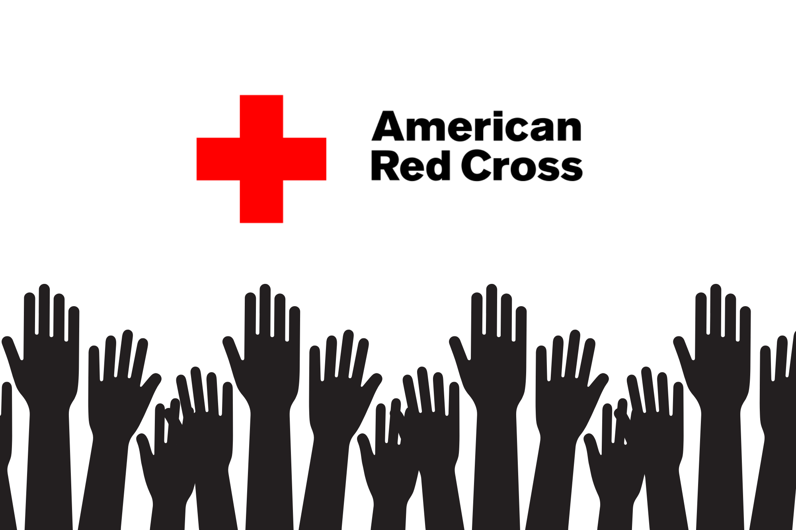

American Red Cross
Supported local blood drives and disaster-preparedness campaigns. Assisted with donor registration, traffic flow, and safety protocols during high-volume events. Gained practical exposure to crisis response and learned to communicate clearly under pressure while coordinating between staff, volunteers, and donors.
Visit Website →STEM Tutoring
Tutored middle-school students in math, programming, and computer science fundamentals. Designed problem sets, guided debugging exercises, and focused on building long-term confidence. Connected abstract concepts to real-world examples to foster curiosity and encourage pathways into STEM.
Aggieland Humane Society
Volunteered at adoption events and animal-care facilities, assisting with feeding, exercise, and socialization. Helped families through the adoption process by sharing resources and answering questions. Developed a deeper sense of responsibility and compassion through service to local pets and their future owners.
Visit Website →